Sony PlayStation 5 (Posse de Théo Oliveira)
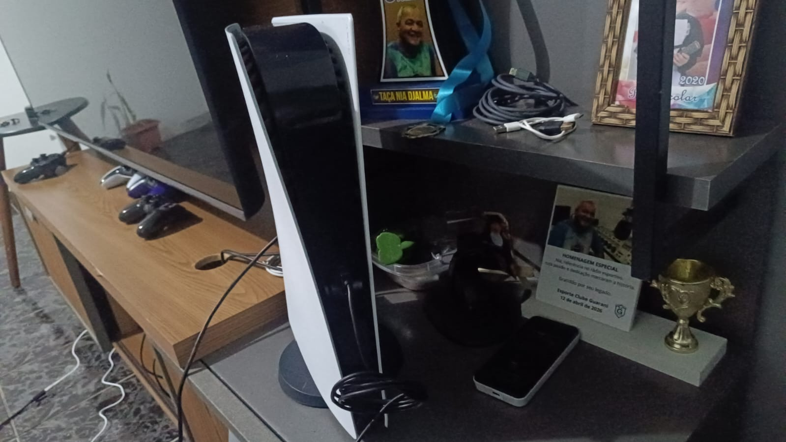
PlayStation 5
O PlayStation 5, também conhecido como PS5, é um console
doméstico desenvolvido pela Sony Interactive Entertainment.
Ele foi lançado em novembro de 2020 e pertence à nona
geração dos videogames.
O console sucedeu o PlayStation 4 e apresentou uma
arquitetura baseada em processadores AMD, combinando
CPU Zen 2, GPU baseada na arquitetura RDNA e uma unidade
de armazenamento SSD de alta velocidade.
Uma das principais mudanças em relação às gerações anteriores
foi justamente a utilização de um SSD como armazenamento
interno principal, permitindo tempos de carregamento
consideravelmente menores em jogos compatíveis.
Outro grande destaque foi o controle DualSense, que substituiu
o DualShock 4 e introduziu gatilhos adaptáveis e feedback
háptico mais avançado.
Mercado e Popularização
O PlayStation 5 chegou ao mercado em um período de forte
crescimento da distribuição digital de jogos e dos
serviços de assinatura.
Além dos jogos vendidos em mídia física, a plataforma
utiliza a PlayStation Store como uma das principais formas
de aquisição de jogos digitais.
O PS5 também mantém compatibilidade com grande parte da
biblioteca do PlayStation 4, permitindo que jogadores
utilizem muitos títulos da geração anterior.
A Sony também ampliou o ecossistema ao redor do console
através de acessórios, serviços online e diferentes
versões de hardware.
Mercado Brasileiro
O PlayStation possui uma presença histórica muito forte
no mercado brasileiro, e o PS5 continuou essa trajetória
durante a nona geração.
O console foi comercializado oficialmente no Brasil,
incluindo tanto a versão equipada com unidade de disco
quanto a versão Digital Edition.
A plataforma também possui suporte à PlayStation Store
brasileira, permitindo a compra digital de jogos,
expansões e outros conteúdos.
Assim como em outros mercados, o preço do hardware,
dos jogos e dos acessórios pode variar ao longo do tempo
devido a impostos, câmbio, promoções e disponibilidade.
Contexto Histórico
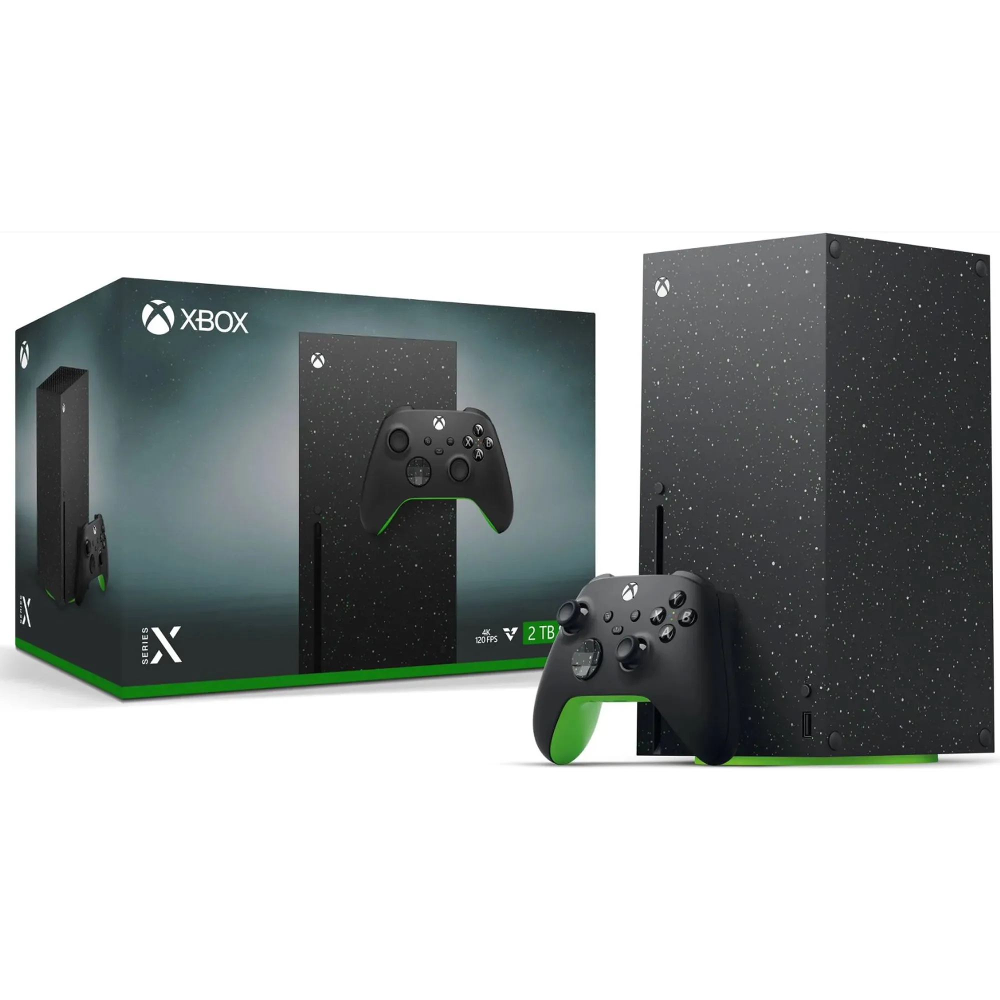
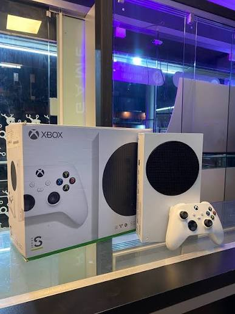
O PlayStation 5 faz parte da nona geração dos consoles,
juntamente com os consoles Xbox Series X e Xbox Series S
da Microsoft.
A geração trouxe como uma de suas principais características
a adoção de armazenamento SSD de alta velocidade, permitindo
reduzir significativamente os tempos de carregamento em
relação às plataformas baseadas em discos rígidos mecânicos.
Outra característica importante foi a utilização de
tecnologias de renderização mais avançadas, incluindo
Ray Tracing em hardware compatível e suporte a resoluções
elevadas e taxas de atualização maiores.
A geração também ocorreu durante um período de grande
expansão dos serviços digitais, jogos por assinatura,
atualizações constantes e distribuição digital.
Jogos e Acessórios
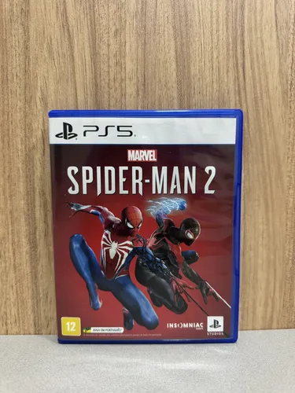
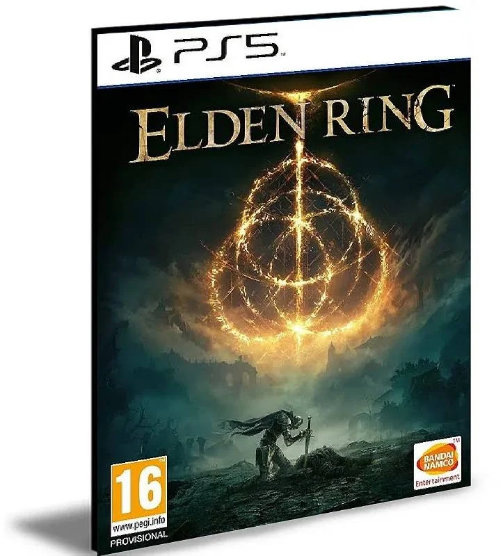
O PlayStation 5 recebeu jogos desenvolvidos especificamente
para a nova geração e também versões de títulos originalmente
lançados no PlayStation 4.
Entre os jogos associados à plataforma estão Demon's Souls,
Ratchet & Clank: Rift Apart, Returnal, Marvel's Spider-Man 2,
Astro's Playroom, Horizon Forbidden West, God of War Ragnarök
e Gran Turismo 7.
O console também recebeu grandes produções multiplataforma,
incluindo Elden Ring, Resident Evil 4, Final Fantasy VII
Rebirth e diversos outros títulos.
Entre os principais acessórios estão o controle DualSense,
headset Pulse 3D, HD Camera, Media Remote, estação de
carregamento e PlayStation VR2.
Modelos e Variações
O PlayStation 5 possui diferentes revisões de hardware
lançadas ao longo de sua vida comercial.
O modelo original foi disponibilizado em duas versões:
uma com unidade de disco Blu-ray Ultra HD e outra
conhecida como Digital Edition, sem unidade óptica.
Posteriormente, a Sony apresentou uma revisão menor,
popularmente conhecida como PS5 Slim, que reduziu o
tamanho físico do aparelho e introduziu mudanças no
sistema de armazenamento e na unidade óptica removível
em determinadas versões.
Também existe o PlayStation 5 Pro, uma versão de hardware
mais potente voltada para melhorias gráficas e de
desempenho em jogos compatíveis.
Além dessas versões, o console recebeu diferentes
acabamentos, edições especiais e cores de tampas laterais.
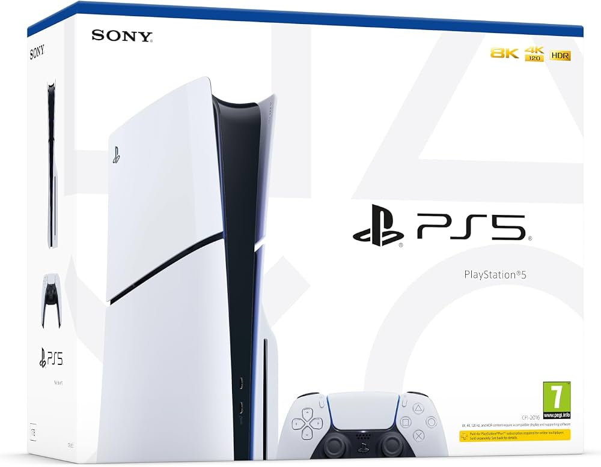
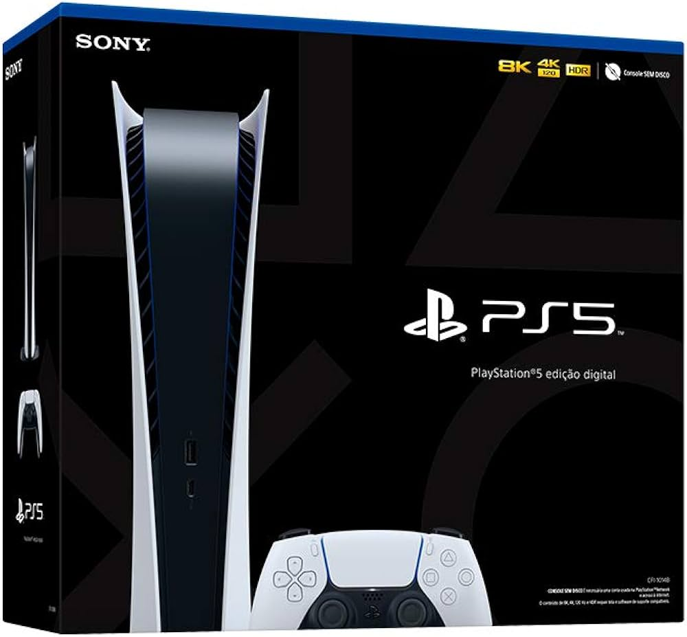
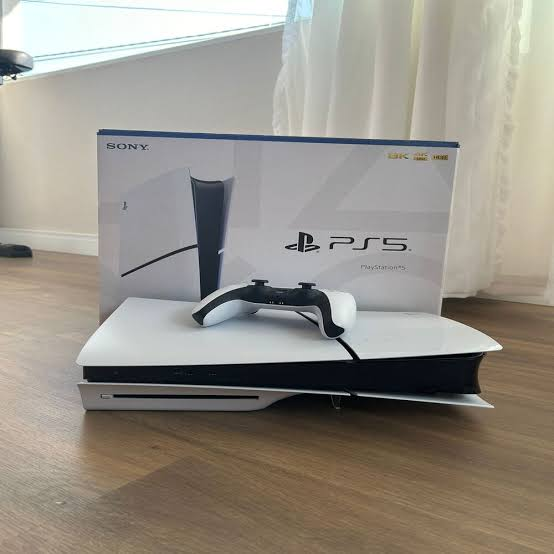
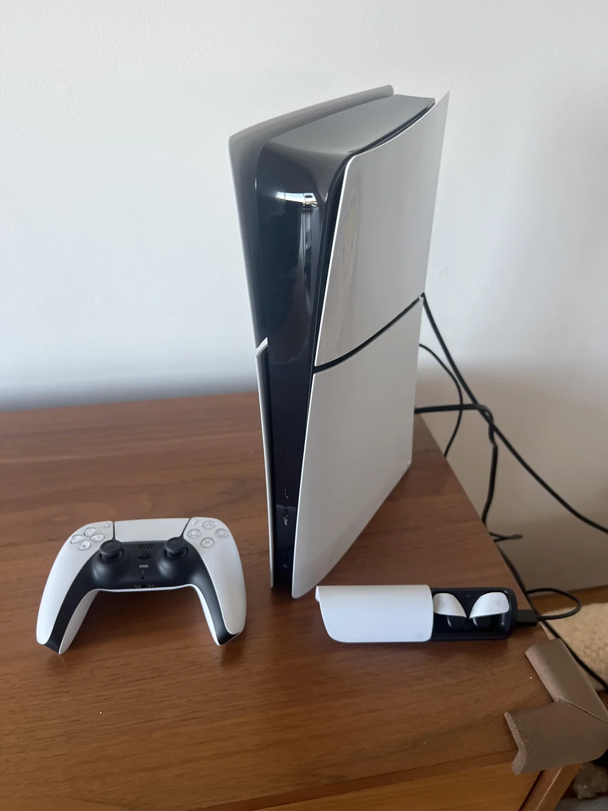
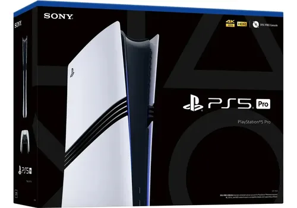
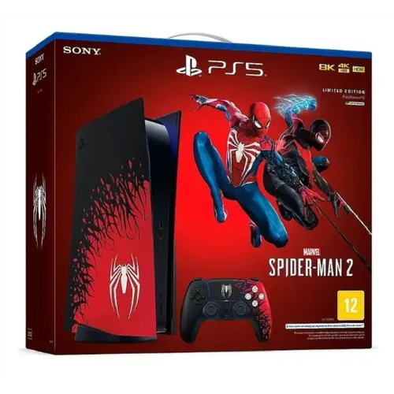
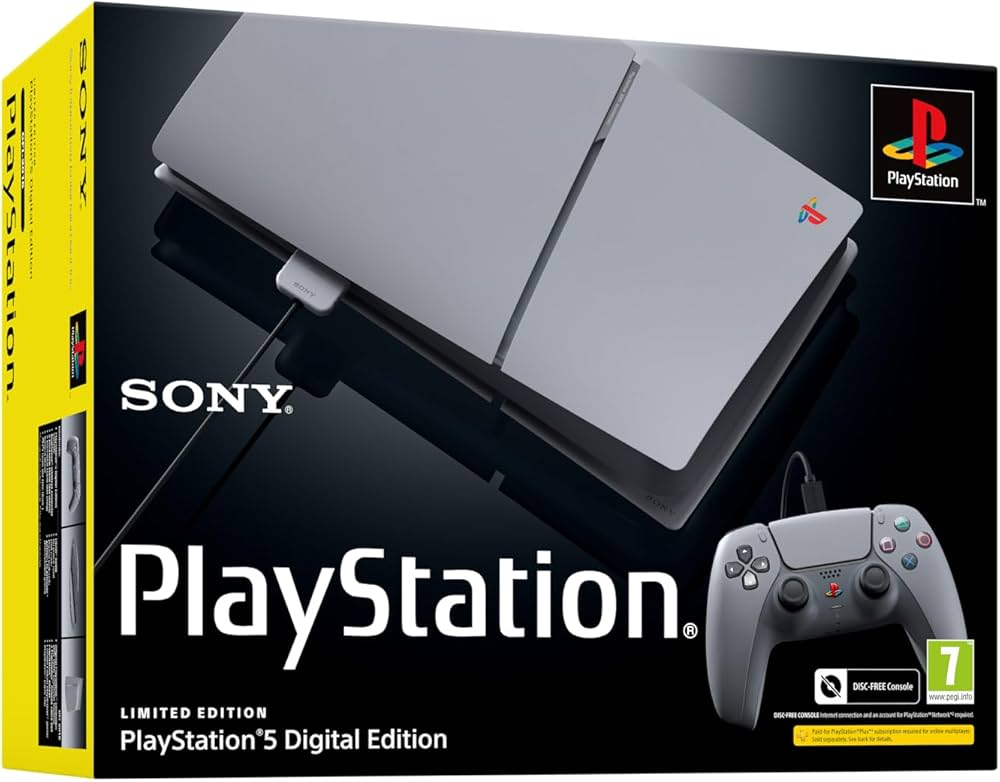
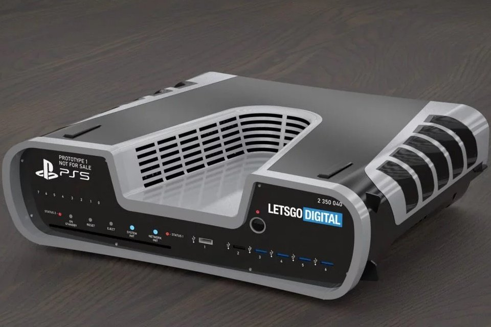